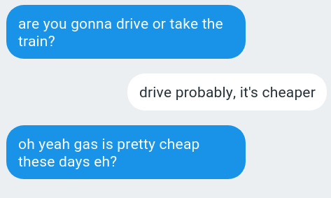

<!DOCTYPE html>
<html>
    <head>
        <title>IM study</title>

        <script src = "jspsych-6.0.5/jspsych.js"></script>
        <script src = "jspsych-6.0.5/plugins/jspsych-html-keyboard-response.js"></script>
        <script src = "jspsych-6.0.5/plugins/jspsych-survey-likert.js"></script>
        <script src = "jspsych-6.0.5/plugins/jspsych-survey-text.js"></script>

        <link href = "jspsych-6.0.5/css/jspsych.css" rel="stylesheet" type="text/css"></link>
    </head>
    <body></body>
</html>

<script>
    var timeline = [];

var subject_id = jsPsych.randomization.randomID(15);

jsPsych.data.addProperties({
    subject: subject_id
});

var scale_fem   = ["not at all feminine"      , "" , "" , "" , "very feminine"];
var scale_masc  = ["not at all masculine"     , "" , "" , "" , "very masculine"];
var scale_young = ["not at all young"         , "" , "" , "" , "very young"];
var scale_queer = ["not at all queer"         , "" , "" , "" , "very queer"];
var scale_can   = ["not at all Canadian"      , "" , "" , "" , "very Canadian"];
var scale_int   = ["not at all intelligent"   , "" , "" , "" , "very intelligent"];
var scale_hes   = ["not at all hesitant"      , "" , "" , "" , "very hesitant"];
var scale_pol   = ["not at all polite"        , "" , "" , "" , "very polite"];
var scale_cas   = ["not at all casual"        , "" , "" , "" , "very casual"];
var scale_fri   = ["not at all friendly"      , "" , "" , "" , "very friendly"];

var welcome = {
    type: 'html-keyboard-response',
    stimulus: 'Welcome to the experiment. Press any key to begin.'
}
timeline.push(welcome)

var demo = {
    type: 'survey-text',
    preamble: '<p><strong> Please answer the following demographic questions. </p></strong>',
    questions: [
        {prompt: "What is your gender?"    , required: true} ,
        {prompt: "What is your age?"       , required: true} ,
        {prompt: "What is your ethnicity?" , required: true} ,
    ],
    data: "demo",
};
timeline.push(demo)

var instructions = {
  type: "html-keyboard-response",
    stimulus: " " +
    "<p>In this study, you will see some screenshots.</p><p>These screenshots are taken from the middle of a conversation which is still ongoing: what you see is not the full conversation, only a part of it.</p>" +
    "<p>Your task will be to decide what you think about one of the participants in the conversation. You'll first be asked to rate them on different scales, and then on the next page you will be able to type in any other comments you have.</p><p>Try to answer the questions at a quick pace, using your gut feeling, without trying to think too hard about them for too long.</p>" +
    "<p>When you are ready, press any key to begin the experiment.</p>"
};
timeline.push(instructions)

var likert_page = {
    type: 'survey-likert',
    preamble: jsPsych.timelineVariable('preamble'),
    questions: [
        {prompt: "How feminine do you think this person sounds?"            , labels: scale_fem   , required: true} ,
        {prompt: "How masculine do you think this person sounds?"           , labels: scale_masc  , required: true} ,
        {prompt: "How young do you think this person sounds?"               , labels: scale_young , required: true} ,
        {prompt: "How queer do you think this person sounds?"               , labels: scale_queer , required: true} ,
        {prompt: "How Canadian do you think this person sounds?"            , labels: scale_can   , required: true} ,
        {prompt: "How intelligent do you think this person sounds?"         , labels: scale_int   , required: true} ,
        {prompt: "How hesitant do you think this person is being?"      , labels: scale_hes   , required: true} ,
        {prompt: "How polite do you think this person is being?"        , labels: scale_pol   , required: true} ,
        {prompt: "How casual do you think this person is being?"        , labels: scale_cas   , required: true} ,
        {prompt: "How friendly do you think this person is being?"      , labels: scale_fri   , required: true} ,
    ],
    data: jsPsych.timelineVariable('id'),
};

var text_page = {
    type: 'survey-text',
    questions: [
        {prompt: "Is there anything else you want to say about the screenshot you just saw? You can enter as much or as little text as you like.", required: false},
    ],
    data: jsPsych.timelineVariable('id'),
};

var test_procedure = {
    timeline: [likert_page, text_page],
    timeline_variables: [
        { preamble: '<p><strong>Consider the screenshot below.</strong></p></img><p><strong>Answer the following questions about the person whose messages are on the left, in the blue text bubbles.</strong></p>', id: '1h'},
        { preamble: '<p><strong>Consider the screenshot below.</strong></p></img><p><strong>Answer the following questions about the person whose messages are on the left, in the blue text bubbles.</strong></p>', id: '2x'},
        { preamble: '<p><strong>Consider the screenshot below.</strong></p></img><p><strong>Answer the following questions about the person whose messages are on the left, in the blue text bubbles.</strong></p>', id: '3m'},
        { preamble: '<p><strong>Consider the screenshot below.</strong></p></img><p><strong>Answer the following questions about the person whose messages are on the left, in the blue text bubbles.</strong></p>', id: '4h'},
        { preamble: '<p><strong>Consider the screenshot below.</strong></p></img><p><strong>Answer the following questions about the person whose messages are on the left, in the blue text bubbles.</strong></p>', id: '5x'},
        { preamble: '<p><strong>Consider the screenshot below.</strong></p></img><p><strong>Answer the following questions about the person whose messages are on the left, in the blue text bubbles.</strong></p>', id: '6m'},
        { preamble: '<p><strong>Consider the screenshot below.</strong></p></img><p><strong>Answer the following questions about the person whose messages are on the left, in the blue text bubbles.</strong></p>', id: '7lmao'},
        { preamble: '<p><strong>Consider the screenshot below.</strong></p></img><p><strong>Answer the following questions about the person whose messages are on the left, in the blue text bubbles.</strong></p>', id: '8lmao'},
        { preamble: '<p><strong>Consider the screenshot below.</strong></p></img><p><strong>Answer the following questions about the person whose messages are on the left, in the blue text bubbles.</strong></p>', id: '9lol'},
        { preamble: '<p><strong>Consider the screenshot below.</strong></p></img><p><strong>Answer the following questions about the person whose messages are on the left, in the blue text bubbles.</strong></p>', id: '10lol'},
        { preamble: '<p><strong>Consider the screenshot below.</strong></p></img><p><strong>Answer the following questions about the person whose messages are on the left, in the blue text bubbles.</strong></p>', id: '11misc'},
        { preamble: '<p><strong>Consider the screenshot below.</strong></p></img><p><strong>Answer the following questions about the person whose messages are on the left, in the blue text bubbles.</strong></p>', id: '12misc'},
        { preamble: '<p><strong>Consider the screenshot below.</strong></p></img><p><strong>Answer the following questions about the person whose messages are on the left, in the blue text bubbles.</strong></p>', id: '13r'},
        { preamble: '<p><strong>Consider the screenshot below.</strong></p></img><p><strong>Answer the following questions about the person whose messages are on the left, in the blue text bubbles.</strong></p>', id: '14r'},
        { preamble: '<p><strong>Consider the screenshot below.</strong></p></img><p><strong>Answer the following questions about the person whose messages are on the left, in the blue text bubbles.</strong></p>', id: '15e'},
        { preamble: '<p><strong>Consider the screenshot below.</strong></p></img><p><strong>Answer the following questions about the person whose messages are on the left, in the blue text bubbles.</strong></p>', id: '16e'},
    ],
    randomize_order: true
};
timeline.push(test_procedure);

var prebrief = {
    type: 'survey-text',
    preamble: '<p><strong> You have finished viewing all the screenshots. Please answer the following questions about the experiment.</strong></p>',
    questions: [
        {prompt: "What do you think the experiment was about?", required: true},
        {prompt: "Did you notice anything interesting about the way language was used in the messages you read? If so, what?", required: false},
        {prompt: "Do you have any general comments about the experiment and your experience doing the experiment?", required: false},
    ],
    data: "bd",
};
timeline.push(prebrief)

var debrief = {
  type: "html-keyboard-response",
    stimulus: " " +
    "<p>You have completed the main portion of the study.</p>" +
    "<p>Please tell the experimenter that you are done.</p>" +
    "<p>The experimenter will debrief you on the purpose of the experiment. Then, there will then be a few more questions for you to answer. </p>" +
    "<p>Once you have been debriefed, press any key to continue.</p>"
};
timeline.push(debrief)

var postbrief = {
    type: 'survey-text',
    preamble: '<p><strong> Please answer these final questions about the experiment.</p></strong>',
    questions: [
        {prompt: "Were you surprised to learn that the experiment was about uh and um? Why or why not?", required: true},
        {prompt: "Do you have any final comments about your experience participating in this experiment?", required: false},
    ],
    data: "ad",
};
timeline.push(postbrief)

var ending = {
  type: "html-keyboard-response",
    stimulus: " " +
    "<p>Thank you for participating in this experiment! Press any key to end the experiment.</p>"
};
timeline.push(ending)

var text_page = {
    type: 'survey-text',
    //preamble: jsPsych.timelineVariable('preamble'),
    questions: [
        {prompt: "Is there anything else you want to say about the screenshot you just saw? You can enter as much or as little text as you like.", required: false},
    ],
    data: jsPsych.timelineVariable('id'),
};

jsPsych.init({
    timeline: timeline,
    on_finish: function() {
    jsPsych.data.get().localSave('csv',subject_id + '.csv');
    jsPsych.data.displayData();
    }
});

</script>
</html>
